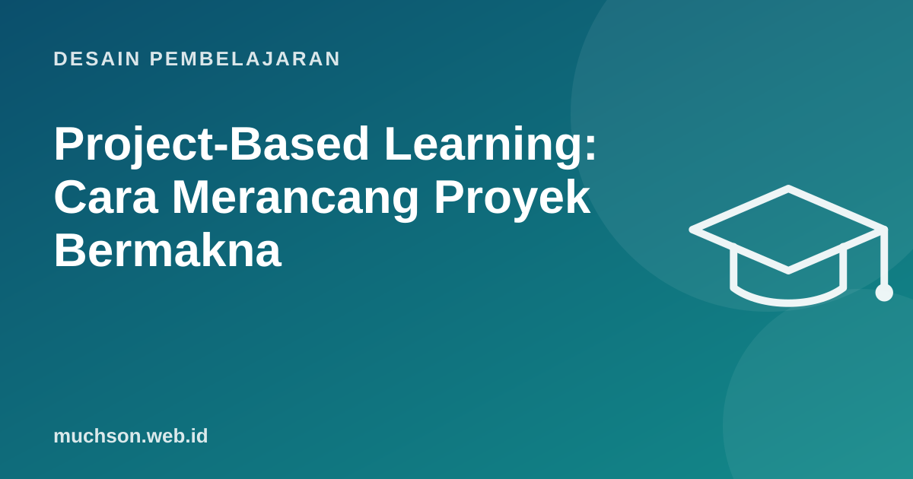

Beranda › Artikel › Desain Pembelajaran
Desain PembelajaranProject-Based Learning: Cara Merancang Proyek Bermakna
Membuat poster di akhir bab sering disebut "proyek", padahal itu hanya hidangan penutup setelah pelajaran utama. Dalam project-based learning, proyeknya adalah pelajaran utama: peserta belajar karena harus menyelesaikan masalah nyata, bukan menyelesaikan masalah untuk membuktikan sudah belajar.

Proyek biasa vs project-based learning
Tujuh elemen desain Gold Standard (PBLWorks)
Langkah merancang
- Mulai dari tujuan belajar yang wajib dicapai, lalu cari masalah nyata yang membutuhkan tujuan itu.
- Rumuskan pertanyaan pendorong yang terbuka tetapi bisa dikerjakan.
- Tentukan produk dan audiens: siapa yang akan melihat hasilnya?
- Rencanakan tonggak (milestone) dengan pemeriksaan di tiap tahap.
- Siapkan "pelajaran tepat waktu": materi singkat diberikan saat dibutuhkan proyek.
- Rancang penilaian untuk proses dan produk, individu dan kelompok.
Contoh: proyek 6 minggu kelas pengembangan web
Menilai proyek kelompok dengan adil
- Gabungkan nilai kelompok (produk) dan nilai individu (kuis konsep, refleksi, kontribusi).
- Gunakan rubrik untuk proses: perencanaan, kolaborasi, revisi berdasarkan umpan balik.
- Minta penilaian sejawat anonim tentang kontribusi anggota.
- Lihat riwayat commit atau dokumen bersama sebagai bukti kontribusi.
Tonggak itu wajib
Proyek gagal biasanya bukan karena idenya, tetapi karena tidak ada tonggak antara. Tanpa pemeriksaan berkala, masalah baru ketahuan di minggu terakhir.
Tanya jawab
Apakah PBL cocok untuk materi dasar?
Bisa, dengan proyek kecil dan banyak dukungan. Untuk dasar yang benar-benar baru, kombinasikan dengan penjelasan langsung dan latihan terstruktur.
Apa bedanya project-based dan problem-based learning?
Mirip. Problem-based biasanya fokus pada analisis dan solusi masalah (sering di kedokteran), project-based menekankan menghasilkan produk.
Bagaimana bila waktu terbatas?
Mulai dengan proyek mini 1-2 minggu dengan satu tonggak tengah. Lebih baik proyek kecil yang tuntas daripada proyek besar yang terburu-buru.
Sumber dan bacaan lanjut
- PBLWorks: Gold Standard PBL, Essential Project Design Elements
- Kokotsaki, Menzies, Wiggins (2016): Project-based learning, a review of the literature, Improving Schools
- Rubrik penilaian (artikel terkait)